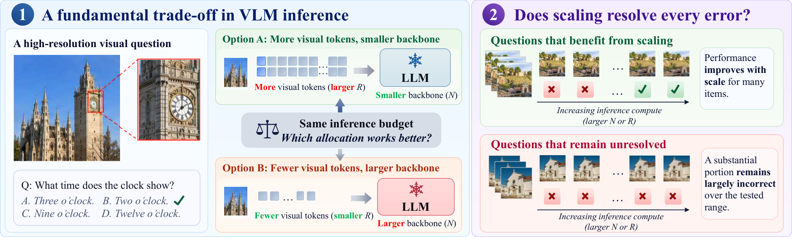
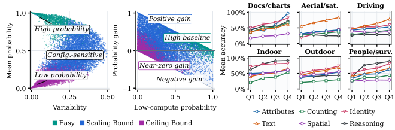

An appendix gives Lean 4/Mathlib source that machine-checks the algebraic core of the closed-form compute-allocation rule, including uniqueness and budget elasticities.
Abstract
Vision-language models (VLMs) face a fixed-budget trade-off between processing more visual information for fine-grained perception and using a larger language backbone for complex reasoning. Existing studies do not tell us which combination of backbone size and input resolution to deploy, especially in high-resolution deployments. To address this gap, we propose the Separable Law that describes how VLM performance changes with language backbone size and visual token count. We fit the law to measurements from 26 InternVL and QwenVL models, with language backbone sizes from 1B to 72B, on four high-resolution benchmarks with image sizes from 224 pixels to 8K. We find that the questions responding to scaling can be predicted from the skill they require, while a substantial fraction never responds at all. We also find that the two model families gain similarly from a larger backbone, while their gains from more visual tokens differ sharply. Combined with a cost law, the Separable Law gives a closed-form rule for allocating compute between backbone size and visual tokens. When deployment is limited to available configurations, the law identifies model and image sizes that perform close to the best feasible choice under the same budget. We hope our work offers a principled way to decide how much a model should be allowed to see at high resolution, given what it must reason about.
Problem
Under a fixed inference budget, vision-language models must trade compute between a larger language backbone and more visual tokens, especially for high-resolution images. Existing scaling studies do not say which combination of backbone size and input resolution to deploy.
Approach
The authors propose the Separable Law, L(N,R) = e_inf + A/N^alpha + B/R^beta, and fit it to 26 InternVL and QwenVL models (1B–72B) on four high-resolution benchmarks with inputs from 224 px to 8K. Combining it with a fitted power-law cost model gives a closed-form optimal allocation via a visual–parameter exchange condition. The algebraic core of this allocation is certified in Lean 4 with Mathlib. The proof checks the budget and balance identities, the uniqueness of their intersection, and the budget elasticities.

Figure 2: Motivation. Left: Language backbone size ( N ) and visual tokens ( R ) both consume inference compute, which raises the question of how to split a fixed budget between them. Right: Scaling helps many questions but leaves others wrong at every scale we test.
Results
About a third of questions stay wrong at every scale tested, and which ones they are depends mainly on the required visual skill. Reasoning tasks saturate more often than perception tasks. The two families have similar capacity exponents but very different visual-token exponents, so the law directs extra compute to the backbone for InternVL and to visual tokens for QwenVL. The law's top-ranked configurations perform close to the best feasible option under the same budget.

Figure 4: Question-level scaling heterogeneity and responses by domain and skill. Left: Mean probability of the correct option versus its variability across (N,R) configurations. Middle: Probability gain \bar{p}_{Q_{4}}-\bar{p}_{Q_{1}} versus its low-compute value \bar{p}_{Q_{1}} . Right: Accuracy across compute quartiles, with one panel per visual domain and one curve per skill.